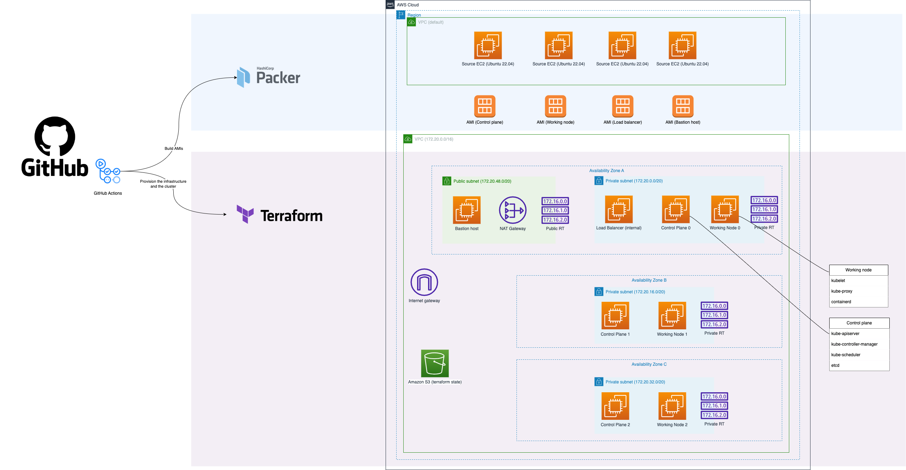

AWS
Date: 27 June 2023
Introduction
Kubernetes has undoubtedly become the de facto standard for container orchestration, offering a powerful and flexible platform for deploying, managing, and scaling containerized applications. As organizations increasingly adopt cloud-native architectures, mastering Kubernetes has become a critical skill for both developers and operations teams. While there are numerous managed Kubernetes services available in the cloud, there's immense value in understanding the intricacies of Kubernetes by building it from scratch, often referred to as "the hard way."
I don't consider myself a regular user of this type of Kubernetes cluster because it can be challenging to maintain. However, it does serve as a valuable tool for educational purposes.
I created this cluster with guidance from an ACloudGuru course called "Kubernetes the hard way." It was quite a challenge because the course utilized an older version of Kubernetes and an outdated DNS plugin. As a result, I had to modify many scripts and troubleshoot extensively. However, despite the difficulties, it turned out to be an enjoyable experience. Additionally, I had to design a multi-Availability Zone (AZ) network for my EC2 instances and set up all the necessary network components. This was necessary because the original course had initially placed all the hosts in the same security group.
Architecture
My solution utilizes three Availability Zones (AZs) within the same region. Additionally, I employ a bastion host for communication with my cluster. All of the EC2 instances use custom images that I constructed during the previous stage of my pipeline.
Realization
I start by creating a Terraform state bucket and a DynamoDB table using the AWS CLI. This is a fairly common block in my pipelines.
...
env:
# prefixes must be the same as in the 00-provider.tf
AWS_BUCKET_NAME_PREFIX: "terraform-state-for-kubernetes-the-hard-way-packer"
AWS_DYNAMO_DB_TABLE_NAME_PREFIX: "terraform-state-for-terraform-state-for-kubernetes-the-hard-way-packer"
AWS_REGION: ${{ vars.AWS_REGION }}
...
- name: Create a bucket
run: |
if [[ "${{ env.AWS_REGION }}" == "us-east-1" ]]; then
aws s3api create-bucket --bucket $AWS_BUCKET_NAME_PREFIX-$AWS_REGION --region $AWS_REGION --no-cli-pager
else
aws s3api create-bucket --bucket $AWS_BUCKET_NAME_PREFIX-$AWS_REGION --region $AWS_REGION --no-cli-pager --create-bucket-configuration LocationConstraint=$AWS_REGION
fi
aws s3api put-bucket-versioning --bucket $AWS_BUCKET_NAME_PREFIX-$AWS_REGION --versioning-configuration Status=Enabled
aws s3api put-bucket-encryption --bucket $AWS_BUCKET_NAME_PREFIX-$AWS_REGION --server-side-encryption-configuration '{"Rules": [{"ApplyServerSideEncryptionByDefault": {"SSEAlgorithm": "AES256"}}]}'
- name: Create a DynamoDB table
run: |
aws dynamodb create-table --table-name $AWS_DYNAMO_DB_TABLE_NAME_PREFIX-$AWS_REGION --attribute-definitions AttributeName=LockID,AttributeType=S --key-schema AttributeName=LockID,KeyType=HASH --billing-mode PAY_PER_REQUEST --tags Key=Name,Value="terraform state dynamo table" Key=CreatedBy,Value="AWS CLI" Key=Region,Value=$AWS_REGION
- name: Create a default VPC in the region
run: |
aws ec2 create-default-vpc || true # create default VPC if not exist. It is required for AMI building
Then I use bash scripts within the pipeline to create certificates and configurations.
➜ scripts-for-certs-and-configs git:(main) tree
.
├── 00-k8s-network.sh
├── 01-certs-ca.sh
├── 02-certs-components.sh
├── 03-certs-api-server.sh
├── 04-certs-service-account.sh
├── 05-kubeconfig.sh
├── 06-generate-encryption-config.sh
├── 07-generate-etcd-service.sh
├── 08-generate-control-plane-configs.sh
├── 09-generate-cluster-role.sh
├── 10-generate-ngix-config.sh
├── 11-generate-containerd-config.sh
├── 12-generate-kubelet-config.sh
├── 13-generate-kube-proxy-config.sh
├── 14-bastion-key.sh
├── 15-generate-wavenet-manifest.sh
└── 16-generate-coredns-manifest.sh
After that, I utilize Packer to build all the Amazon Machine Images (AMIs) and copy necessary files.
==> Builds finished. The artifacts of successful builds are:
\--> k8s-control-plane-2.amazon-ebs.ubuntu-kubernetes-the-hard-way-control-plane-2: AMIs were created:
us-west-2: ami-0314729fef4933bdc
--> k8s-control-plane-0.amazon-ebs.ubuntu-kubernetes-the-hard-way-control-plane-0: AMIs were created:
us-west-2: ami-088c138db1acf379f
--> k8s-control-plane-1.amazon-ebs.ubuntu-kubernetes-the-hard-way-control-plane-1: AMIs were created:
us-west-2: ami-0d348cd361f433388
--> k8s-load-balancer-internal.amazon-ebs.ubuntu-kubernetes-the-hard-way-load-balancer-internal: AMIs were created:
us-west-2: ami-07cbdbe6027e64882
--> k8s-bastion-host.amazon-ebs.ubuntu-kubernetes-the-hard-way-bastion-host: AMIs were created:
us-west-2: ami-0f0e571a26d6ac08a
--> k8s-working-node-1.amazon-ebs.ubuntu-kubernetes-the-hard-way-working-node-1: AMIs were created:
us-west-2: ami-015f7e349eb6ec7ac
--> k8s-working-node-2.amazon-ebs.ubuntu-kubernetes-the-hard-way-working-node-2: AMIs were created:
us-west-2: ami-03feac7b952f2ce5c
--> k8s-working-node-0.amazon-ebs.ubuntu-kubernetes-the-hard-way-working-node-0: AMIs were created:
us-west-2: ami-089c713f758a50a63
Finally, I provision the entire infrastructure using my custom AMIs through Terraform.
➜ terraform git:(main) tree
.
├── 00-provider.tf
├── 01-vpc.tf
├── 02-subnets.tf
├── 03-security-groups.tf
├── 04-route-tables.tf
├── 05-nat-gateway.tf
├── 06-ssh-key.tf
├── 07-ec2-control-plane.tf
├── 08-ec2-load-balancer.tf
├── 09-ec2-working-node.tf
├── 10-ec2-bastion.tf
└── 99-variables.tf
You can watch a time-lapsed video.
This is what we observe in the AWS console
Here are the results as I see them in the AWS console:
VPC

AMIs

AMI

Instances

Instances

Kubernetes objects

Kubernetes objects

Conclusion
To summarize, my journey of building Kubernetes on AWS using Terraform and Packer was very educational. Although it was not easy, it was a unique opportunity to learn Kubernetes architecture and how it works in depth.
I hope you enjoy this article.
You can find all of my code in my GitHub repository: https://github.com/andygolubev/kubernetes-the-hard-way-aws
Feel free to connect with me on LinkedIn: https://www.linkedin.com/in/andy-golubev/